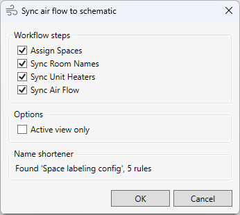
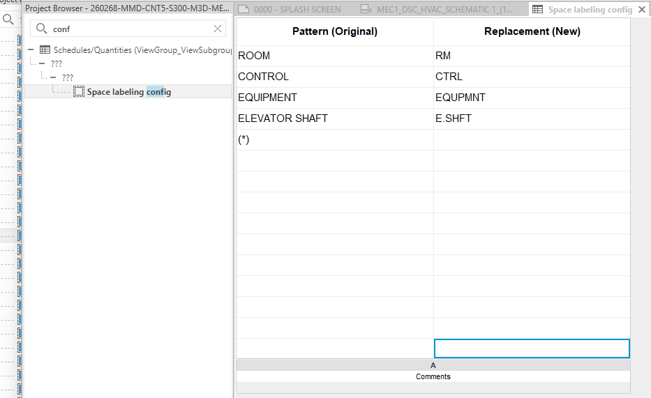
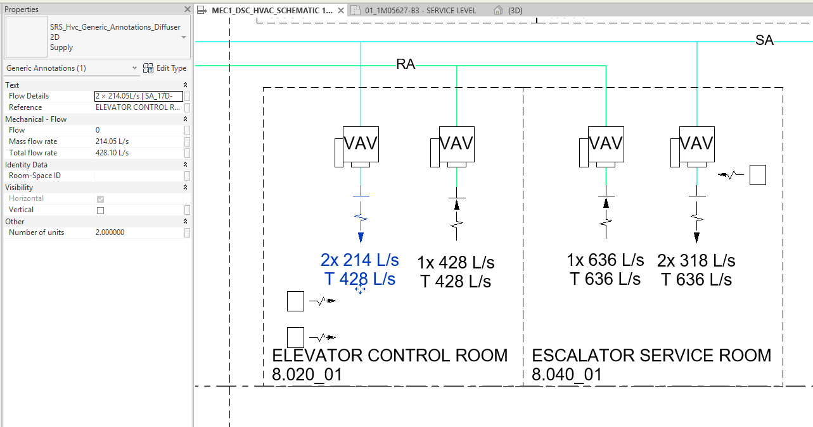

Sincronización de datos para esquemas HVAC (Sync Air Flow)
Tabla de contenidos
El comando sincroniza de manera integral los datos entre el modelo 3D y los esquemas 2D, actualizando los nombres de los espacios, el caudal de aire y creando anotaciones para el equipo.
Flujo de trabajo (Workflow)
La herramienta se divide en pasos independientes que el usuario puede seleccionar en la interfaz:

- Assign Spaces (Vinculación de elementos): Vincula el equipo 3D en el modelo con los espacios 3D, completando el parámetro del equipo. Esto es necesario para el correcto funcionamiento de todos los pasos posteriores. (Duplicación del comando
AssignSpacesToEquipment, se realiza en una transacción separada). - Sync Room Names (Nombres de espacios): Copia el nombre del espacio 3D al parámetro de la anotación del espacio en el esquema.
- Opción: Name Shortener — permite acortar automáticamente nombres largos (p. ej., “ELECTRICAL ROOM” → “ELEC. RM”) según las reglas de una tabla en el proyecto.
- Sync Unit Heaters (Calentadores unitarios): Sincroniza la cantidad de unidades de calefacción. Cuenta el equipo 3D en el espacio и crea/verifica la cantidad correspondiente de anotaciones en el esquema.
- Sync Air Flow (Caudal de aire): Suma los caudales de todos los difusores 3D por tipo de sistema (suministro/retorno) vinculados al espacio, y registra los valores totales, la cantidad y los tipos de sistema en las anotaciones del esquema.
Características clave
1. Name Shortener (Acortador de nombres)
Un sistema flexible de abreviaturas gestionado por el usuario a través de una tabla estándar de Revit (ViewSchedule):
- Origen de las reglas: Tabla llamada “Space labeling config” (configurable).
- Formato: Dos columnas en el encabezado —
Pattern(Patrón) yReplacement(Reemplazo). - Wildcards (Comodines): Soporte para el carácter
*(cualquier número de caracteres). Por ejemplo, la regla*ELECTRICAL* → ELEC.reemplazará cualquier variación con esta palabra. - Limpieza: Eliminación automática de espacios adicionales después de los reemplazos.

2. Gestión inteligente de la vista
- Filtro por vista: Capacidad de ejecutar el procesamiento solo para la vista activa o para todo el proyecto (todos los esquemas).
3. Seguridad de los datos
- La herramienta nunca elimina automáticamente las anotaciones de los calentadores unitarios. Si hay más anotaciones que equipo, se marcan como “sobrantes” в el informe final para su revisión manual.
4. Resultados
- El equipo 3D tendrá registrado el parámetro SRS_MEP_Room_Space_Mark в el formato NombreEspacio-NumeroEspacio.
- El parámetro Room Name в las anotaciones de espacio se actualizará.
- Se actualizarán los siguientes parámetros в las anotaciones de difusor (
SRS_Hvc_Generic_Annotations_Diffuser 2D):- Total flow rate: El caudal de aire total de todos los terminales 3D coincidentes.
- Number of units: El número total de terminales 3D coincidentes.
- Mass flow rate: El caudal de aire promedio (caudal total / cantidad).
- Flow Details: Una cadena de texto con detalles del cálculo (p. ej.,
2 × 150L/s + 1 × NoParam).
- Se crearán las anotaciones 2D faltantes para los calentadores unitarios. Las nuevas anotaciones se colocan в columna, comenzando desde la esquina inferior izquierda del espacio в el esquema.

5. Informe interactivo
El comando proporciona un informe detallado de las acciones realizadas.
- Informe corto: Se muestra una versión resumida en la ventana principal. Las listas largas de errores (más de 10-20) se truncan automáticamente para facilitar la lectura.
- Informe completo: Para ver la lista completa de todos los mensajes e IDs, haga clic en el botón Abrir informe completo. Esto creará un archivo de texto con el informe completo и lo abrirá в su editor predeterminado.
6. Limitaciones и lógica de funcionamiento
- Anotaciones sobrantes: El comando no elimina las anotaciones “sobrantes” de los calentadores unitarios. En su lugar, informa sobre ellas.
- Lógica de coincidencia de sistemas (para caudal de aire):
- La Clase de sistema (
Supply AiroReturn Air) se determina por el nombre del tipo de la anotación 2D del difusor (SupplyorExhaust). - Primero, el comando busca coincidencias entre las anotaciones 2D и los terminales 3D por coincidencia exacta del espacio и la clase de sistema calculada.
- Si se encuentran varios sistemas de la misma clase в un mismo espacio, se activa una lógica más compleja:
- El nombre de la vista donde se encuentra la anotación 2D se busca como parte del nombre del sistema de conductos в 3D.
- Ejemplo: Una anotación 2D en la vista
Plano HVAC SA-1se asociará con el sistemaSA-1-Oficina.
- Ejemplo: Una anotación 2D en la vista
- Si la coincidencia por nombre de vista falla, el comando realizará una asociación arbitraria и informará de ello.
- La Clase de sistema (
7. Configuración a través de JSON
Algunos parámetros de funcionamiento, как los nombres de familias и parámetros, se pueden configurar a través del archivo de configuración central de BIM Tools. Esto permite adaptar el comando a los estándares de su proyecto sin cambiar el código.
El archivo de configuración se encuentra en:
%AppData%\Sener\BimTools\Settings.json
Как abrir esta ruta?
%AppData%es un acceso directo estándar de Windows para acceder a una carpeta oculta con ajustes.
- Copie la ruta completa (incluyendo
%AppData%, но без имени файла:%AppData%\Sener\BimTools).- Abra el Explorador de Windows (cualquier carpeta, p. ej., “My Computer”).
- Haga clic в la barra de direcciones, pegue la ruta completa и presione Enter. La carpeta con el archivo
Settings.jsonse abrirá напрямую.
Para este comando, busque la sección SyncAirFlowSettings в el archivo, cambie los valores deseados и guarde el archivo. No es necesario reiniciar Revit; simplemente ejecute el comando.
Nota para
UnitHeater3d: В la versión actual, para la lista de calentadores unitarios 3D (UnitHeater3d), solo se considera el nombre de la familia. Cualquier texto después de los dos puntos (:) será ignorado. La herramienta procesará automáticamente todos los tipos para cada familia especificada.
Work Log
2026.06.11 Se ha añadido la interfaz de usuario con división en pasos y Name Shortener. Se ha corregido el error de duplicación de calentadores unitarios cuando hay varios esquemas con el mismo espacio.